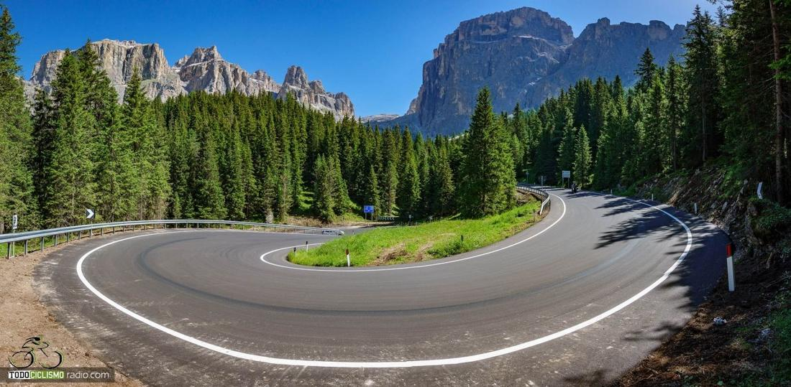
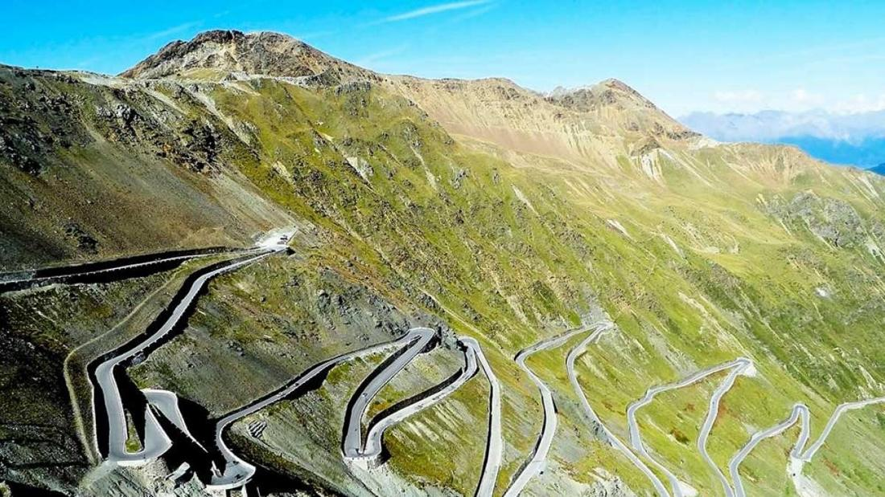
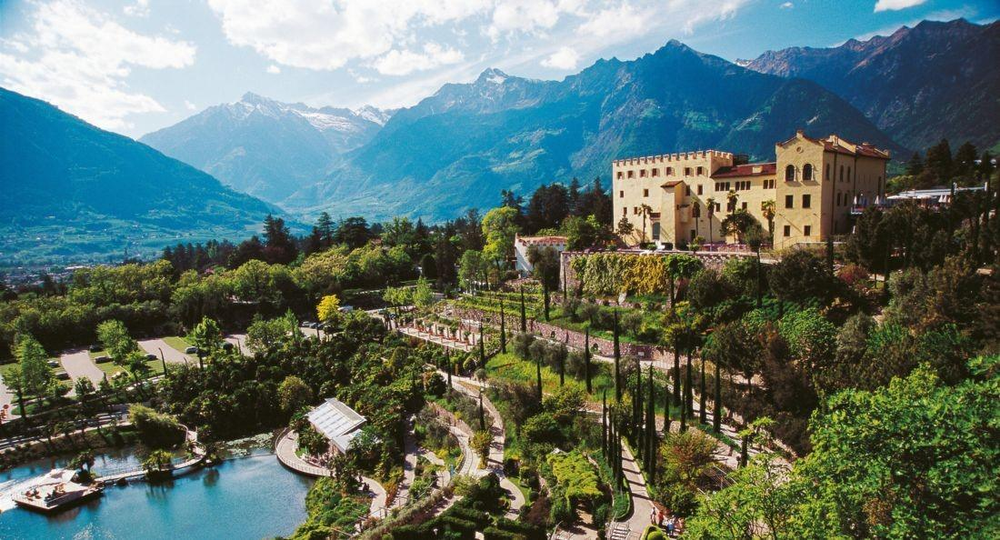

Programa día a día
Horarios, etapas y hotel de cada noche. Los perfiles salen de los tracks GPS del viaje.
Los hoteles
Alojamiento con desayuno en habitación doble. Vuestra maleta os espera en cada hotel: la llevamos nosotros.



Información práctica
Lo que conviene saber antes de salir de casa.
Punto de encuentro
11 de julio, 15:00 h, aeropuerto internacional Marco Polo de Venecia. Desde allí vamos todos juntos a Cortina d'Ampezzo (unas 2 horas). Si no podéis llegar a esa hora, tendréis que tomar un transfer privado por vuestra cuenta.
Final del viaje
18 de julio. Salimos de Bormio a las 9:00 h hacia el aeropuerto de Milán Malpensa (unas 3 h 30 min) y llegamos sobre las 12:30 h. Recomendamos no tomar vuelos que salgan antes de las 15:00 h. Si vais a Milán centro u otro aeropuerto, podéis seguir en transfer o tren.
Etapas autoguiadas
No hay guía en ruta, pero sí vehículo de apoyo que os ayuda en los tramos y cruces más complicados. Cada ciclista tiene los tracks para el móvil o el Garmin. El grupo debe ir junto, con reagrupamientos en las cimas y cruces que indiquen los guías.
Comidas
Desayuno en los hoteles, picnic o restaurante a mediodía los días de etapa y cenas en hotel o restaurante. Refrescos y bebidas alcohólicas no están incluidos, salvo que lo indique el guía. Si tenéis alguna intolerancia, avisadnos.
Hoteles
Alojamiento y desayuno en habitación doble; algunas noches también la cena. Las bebidas de las cenas y cualquier extra se pagan en el hotel antes de salir.
Equipaje
Una maleta por persona, de 23 kg como máximo. Llevad todo dentro de la maleta durante el viaje para no perder cosas sin identificar. Ponedle la etiqueta con vuestro número que os daremos.
Teléfono
Llevad el móvil operativo con datos y llamadas para poder hablar con los guías en cualquier momento.
Documentación
Traed una foto del pasaporte plastificada para llevarla encima durante las etapas.
Seguro
El viaje no incluye seguro de accidentes. Es imprescindible traer un seguro deportivo con buenas coberturas; muchos seguros de viaje necesitan una ampliación para cubrir el ciclismo.
Bicicletas
Entrega de las bicis de alquiler el 11 de julio a las 17:00 h en el hotel de Cortina, con revisión y ajuste de posición: traed vuestras medidas anotadas. Se devuelven el 17 al terminar la última etapa, en Bormio. El casco es obligatorio.
El viaje incluye
- Alojamiento y desayuno 7 noches en hoteles de 3 y 4 estrellas
- Traslados de ida y vuelta a los aeropuertos indicados
- Traslado de equipajes entre hoteles
- Vehículo y chófer siempre en ruta, y un segundo vehículo para emergencias
- Picnics completos en ruta
- 7 cenas en hoteles y restaurantes
- Tracks GPS y documentación de cada etapa
- Dossier del viaje y selección de restaurantes de la zona
No incluye
- Guía de ciclismo en ruta
- Bicicletas de alquiler
- Refrescos y bebidas alcohólicas en las comidas
- Spa, entradas a monumentos y catas
- Seguro de accidentes
Qué llevar
Máximo confort con el mínimo peso. Marca lo que ya tienes en la maleta: se queda guardado en este dispositivo.
Consejo: dobla bien la ropa y usa bolsas de distintos colores para encontrarlo todo de un vistazo. Prueba antes del viaje que la ropa de ciclismo es de tu talla.
Contacto
Nuria Rozalén
Durante el viaje
Os acompañan nuestros guías Nuria y Enzo en las furgonetas de asistencia, desde el encuentro en Venecia hasta la llegada a Malpensa.
Para cualquier duda sobre el equipaje o la lista de material, escribidnos: estaremos encantados de ayudaros.